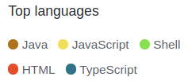
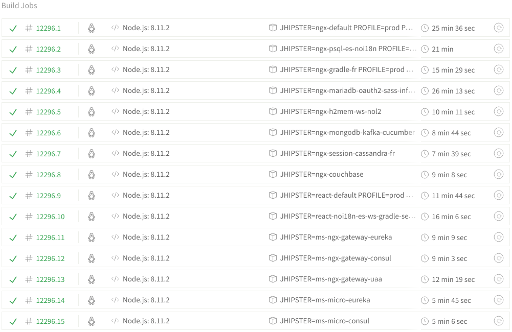
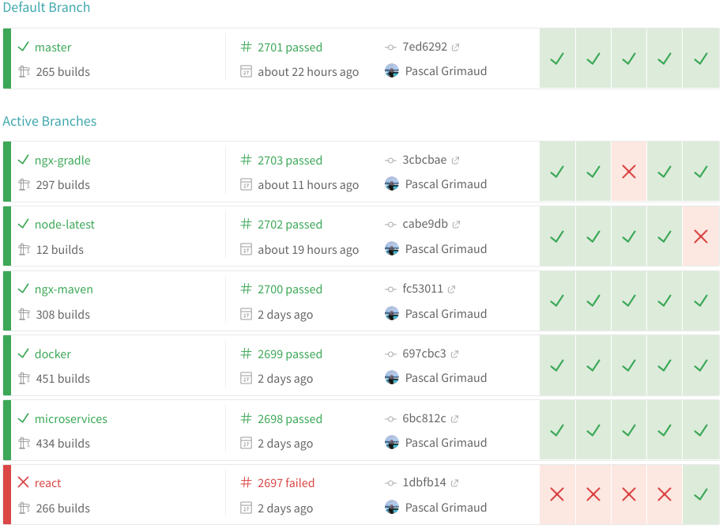
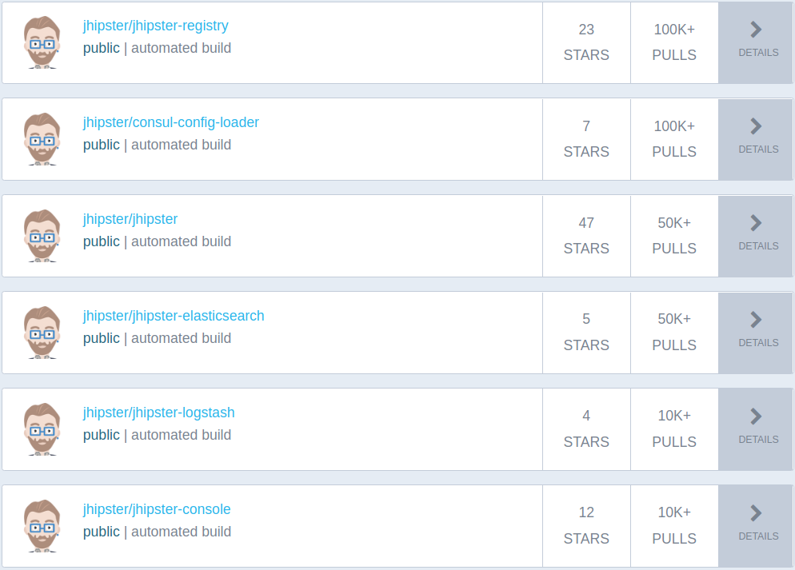

DevOps with JHipster
Continuous Integration and Delivery
Pascal GRIMAUD
Java Consultant

Open Source Developer
 @pascalgrimaud
@pascalgrimaud
 github.com/pascalgrimaud
github.com/pascalgrimaud
Summary

- Part 1: JHipster Continuous Integration
- Part 2: How JHipster can help DevOps team ?
Part 1
JHipster Continuous Integration
- What do we use ?
- What happens when someone summits a PR ?
- What happens when it's merged into master ?
JHipster Organization
on
- more than 50 projects
- 
JHipster Organization
- Main projects:
- generator-jhipster
- jhipster.github.io
- jdl-studio
JHipster Organization
- Libraries:
- ng-jhipster
- react-jhipster
- jhipster-core
- jhipster (lib)
- jhipster-uml
JHipster Organization
- Applications / samples:
- jhipster-registry
- jhipster-online
- jhipster-sample-app-X
- jdl-samples
JHipster Organization
Tools:
- jhipster-console
- jhipster-devbox
- jhipster-ide
- chocolatey-package
- jhipster-oh-my-zsh-plugin
- jhipster-fisherman-plugin

- Travis is free for Open Source
- Each push will trigger 15 builds
- More than 12200 builds since 2013

What do we need to test ?
- the generator him self
- the installation of tools:


- the generated application
- backend tests
- frontend tests
- end-to-end tests


Hard to test everything
- front: Angular / React
- back: maven / gradle
- security: jwt, oauth2, session
- css: sass
- cache: no l2
- database: mysql, mariadb postgresql, mongodb, cassandra, couchbase
- option: kafka, elasticsearch, websocket
- microservices: eureka, consul, uaa, oauth2
- lot of options: more than 20000 different configs
- if you add entities, it will be more configuration
 Daily builds at Hipster-Labs
Daily builds at Hipster-Labs
 Daily builds at Hipster-Labs
Daily builds at Hipster-Labs
Tips for contributors
Link your GitHub account to Travis CI 
- work on your fork
- push in a branch of your fork
- a build will be triggered in your Travis
- if everything passed, you can pull request


 Docker Hub
Docker Hub
 Docker Hub
Docker Hub

Road Map
Use other free CI
to increase the number of builds to test JHipster with WindowsSonarCloud organization
- Migrate to Organization
- Add more applications
Other tests

About releases ?
- Manually:
- Release notes
- Tweet
About releases ?
- Automate:
- Tag
- Push to NPM
- Generation of all jhipster-sample-app-X
- DevBox